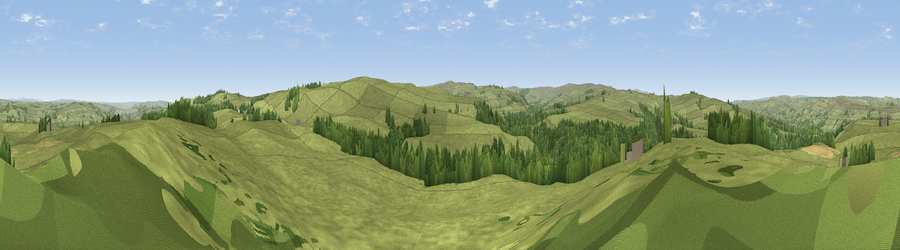

Harsondale Law
#12923 in England · top 34% of its area beats it · near CattonThe view, rendered

A 360° render of this exact spot computed from the terrain model, tree cover and land cover — summer colours, afternoon light, calibrated against photographs of famous viewpoints. Real trees, hedges and buildings will differ in detail.
The panorama
Grey silhouette: terrain skyline in each direction (720 bearings, Earth curvature and refraction included). Dashed green: skyline with trees (+15 m) and buildings (+8 m) as obstacles. Blue strip: how far the ground is visible on each bearing.
Where the view opens
Wedge length = distance to the farthest visible ground on that bearing (vegetation-aware). Rings at 10, 25 and 50 km.
What fills the view
86% grassland · 13% woodland · 1% cropland
Angular shares of the visible panorama (visual magnitude), not map area. Landscape diversity 0.20 (0–1 Shannon).
Key numbers
More beautiful places nearby
The staircase of upgrades: each row has a higher view potential than everything closer. Driving times are estimates from straight-line distance, calibrated against real road routing — check an actual route before setting out.
| Place | Direction | Drive | Score |
|---|---|---|---|
| Viewpoint near Catton | SSE · 2 km | ~5 min | 61.2 |
| Catton Beacon | SE · 2 km | ~6 min | 64.6 |
| Viewpoint near Catton | SSW · 6 km | ~12 min | 66.0 |
| Viewpoint near Allendale | S · 7 km | ~14 min | 68.1 |
| Hotbank Crags | NNW · 8 km | ~16 min | 70.4 |
| Viewpoint near Bardon Mill | N · 9 km | ~18 min | 71.0 |
| Viewpoint near Fourstones | NE · 12 km | ~22 min | 71.4 |
| Viewpoint near Allenheads | S · 16 km | ~29 min | 74.6 |
54.94441, -2.30008 · source: dobih hill · position refined by local search. Computed location — check access rights before visiting.